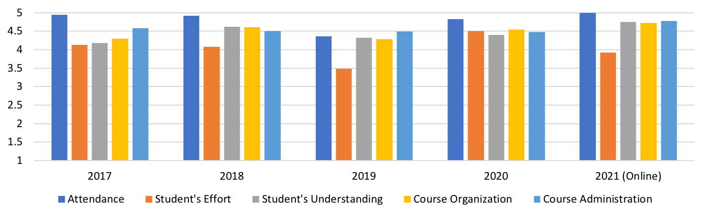

OVERVIEW
Multicore processors are ubiquitous. It is an unavoidable consequence of the breakdown of Dennard scaling, which has put a stop to hardware delivering ever faster sequential performance. Hence, it is essential to parallelize the software applications running on these multicore processors for achieving high performance. FPP introduces the fundamentals of parallel programming. It covers both the traditional approaches and new advancements in the area of parallel programming. A key aim of this course is to provide hands-on knowledge on parallel programming by writing parallel programs in different programming models taught in this course. This course is offered in the spring semester at IIIT Delhi for undergraduate and postgraduate students. Students interested in taking this course should have prior experience with C/C++ programming.
NEWS
Recently a paper on the FPP course was published at the EduHiPC workshop. This workshop is a part of the NSF/IEEE TCPP's (Technical Committee on Parallel Processing) curriculum initiative on parallel and distributed computing for computer science undergraduates [links: paper, slides, video].
LECTURE TOPICS
- Course overview, dos and don'ts [PDF]
- Refresher on processes and threads, Pthread programming [PDF]
- Introduction to parallel architectures and programming models [PDF]
- Concurrency decomposition [PDF]
- Introduction to dynamic tasks creation and termination, async-finish programming model [PDF]
- Introduction to Habanero C/C++ library (HClib), computation graphs and ideal parallelism [PDF]
- Greedy scheduling of computation graph on a fixed number of processors, template of a library-based thread-pool runtime [PDF]
- Dynamic task scheduling using work-sharing and work-stealing [PDF]
- Work-first and help-first work-stealing [PDF]
- Loop-level parallelism and false sharing [PDF]
- Mutual Exclusion in async-finish Program [PDF]
- Mid semester review [PDF]
- Task affinity with Hierarchical Place Trees (HPT) [PDF]
- Futures, Promises and Data-Driven Tasks [PDF]
- Cilk language and runtime [PDF]
- Java TryCatch work-stealing [PDF]
- Introduction to OpenMP [PDF]
- Work-sharing constructs in OpenMP [PDF]
- Task parallelism in OpenMP [PDF]
- Introduction to distributed memory parallel programming using the Message Passing Interface (MPI) [PDF]
- Point-to-point communications in MPI [PDF]
- Collective communications in MPI, hybrid parallelism by using OpenMP in MPI [PDF]
- Parallel programming in Partitioned Global Address Space (PGAS) [PDF]
- End semester review [PDF]
- Research seminar-1
- Research seminar-2
ASSESSMENT PLAN
- Take home assignments (10%)
There are two assignments. Assignment-2 is a pair-programming based assignment. The output of assignment-1 serves as the input of assignment-2. - Pair programming based project (25%)
Projects are released immediately after the midterm exams. The projects are aimed to teach runtime techniques for achieving high performance in task-based parallel programming model. We provide a set of pre-published conference papers and allow each student group to choose a research paper from these options. There are three intermediate deadlines for course project. - Lab programming (5%)
Labs in FPP are short programming exercises that the student has to complete within 90 minutes in the presence of TAs. In each lab, we provide the student with a partially in-complete program. Students have to add parallelism to this program as per the supplied description. We follow N-1 policy for lab evaluation. - Quizzes (10%)
Quizzes happen roughly after every four lectures. Each quiz is of 20 minutes duration and is scheduled during the lecture hours towards the end of the lecture. The quiz consists of multiple-choice questions, fill in the blanks, and reasoning based questions. We follow N-1 policy for quiz evaluation. - Midterm exam (20%)
- Endterm exam (30%)
HELPFUL RESOURCES
- The Missing Semester of Your CS Education (MIT)
- Introduction to Github
- Debugging multithreaded programs
- Softwares for the FPP course
PAST OFFERINGS
{kind=link}
{kind=link}
{kind=link}
STUDENT FEEDBACK

Student feedback on a scale of 1-5
INSTRUCTOR